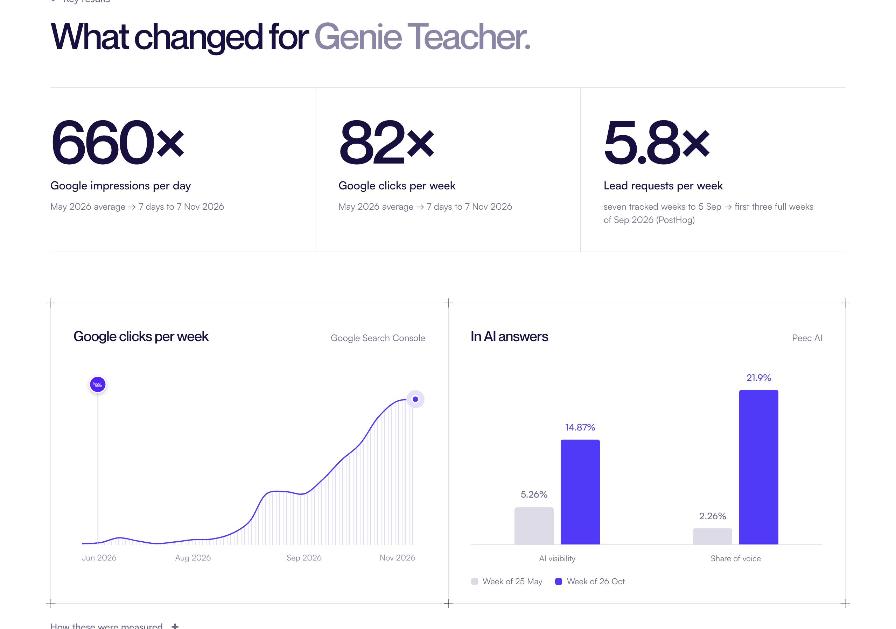
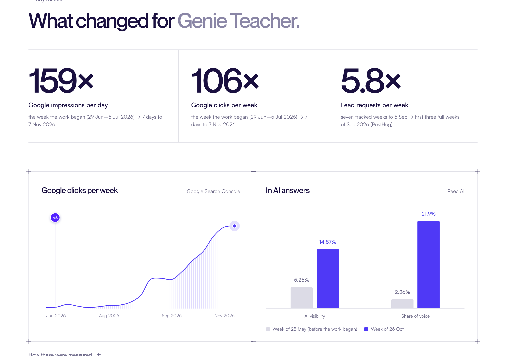
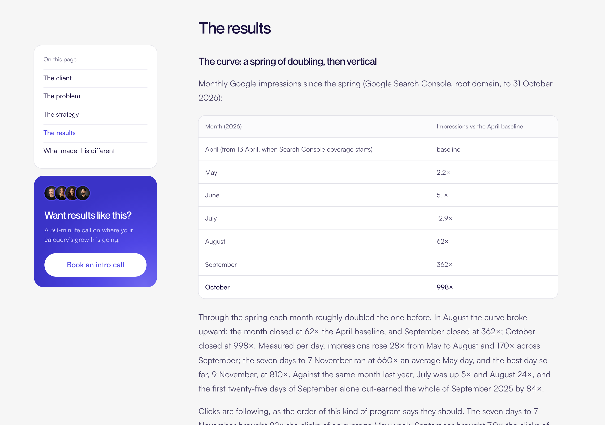
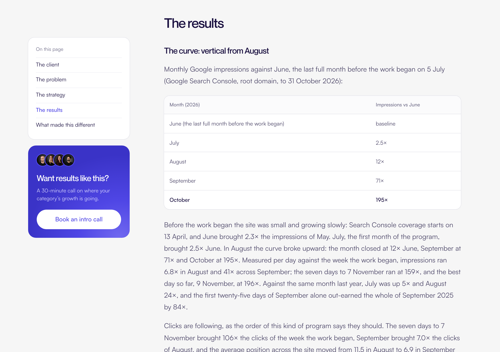
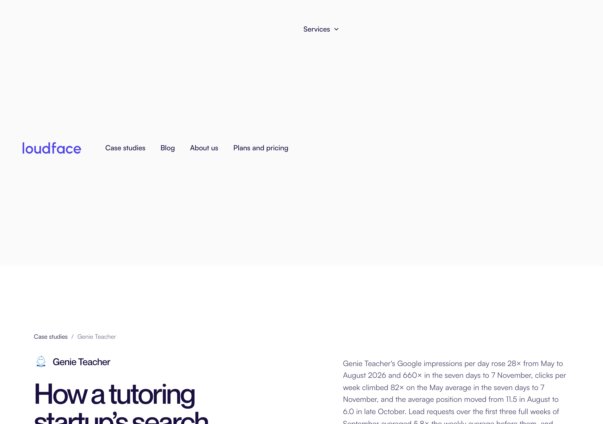
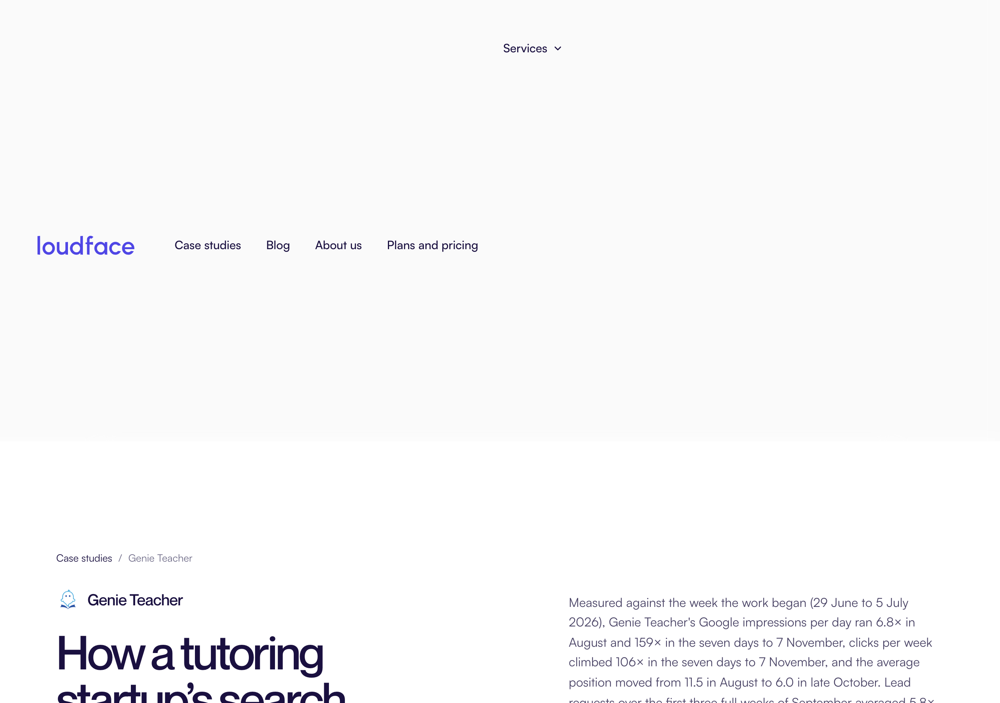

Before, growth was measured from May or April 2026, the first months Google Search Console has data for, which read as if LoudFace started in spring. After, it is measured from the week the work began (29 June to 5 July 2026). The data and the end dates did not change; only the starting point did, so the multiples are smaller and honest.






| Figure | Before | After |
|---|---|---|
| Google impressions per day, 7 days to 7 Nov | 660× the May average | 159× the week the work began |
| Google clicks per week, 7 days to 7 Nov | 82× an average May week | 106× the week the work began |
| August, impressions per day | 28× May | 6.8× the week the work began |
| September, impressions per day | 170× May | 41× the week the work began |
| October, monthly impressions | 998× April | 195× June |
| Best day, 9 Nov | 810× an average May day | 196× the week the work began |
| AI readings from 25 May | no label | labelled "before the work began" |
| Cover image card | 660× | 159× |
| Booking page chart caption | "against the May 2026 average" | "against the week the work began" |